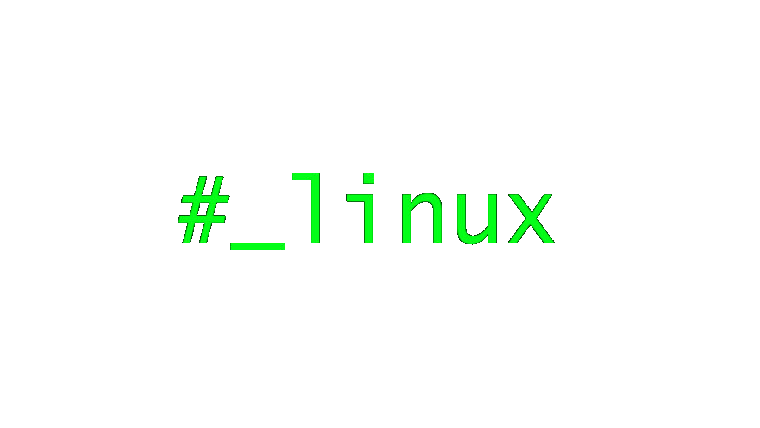
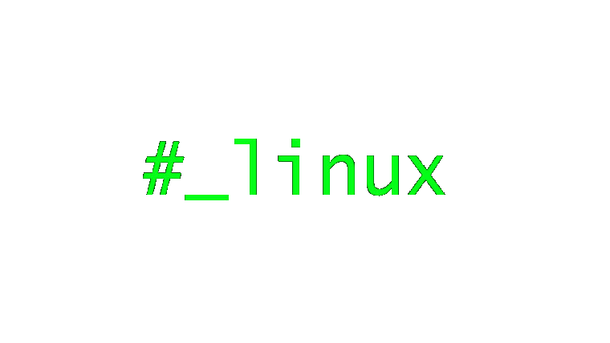
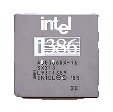

Linux este o famlie de sisteme de operare de tip Unix care folosesc Nucleul Linux (in engleza kernel). Linux poate fi instalat pe o varietate larga de hardware, incepand cu telefoane mobile, tablete, console video, continuand cu calculatoare personale pana la supercomputere. Linux este cunoscut in principal pentru utilizarea sa ca server, in 2009 i se estimeaza o cota de piata intre 20-40%. Cota de piata de desktop este estimata intre 1-2% si 4.8%. In ultimii ani, Linux a inceput sa devina tot mai populat atat datorita unor distributii precum Ubuntu, openSUSE, Fedora, precum si datorita aparitiei neetbok-urilor si a noii generatii de telefoane inteligente (in engleza smarth phone) care ruleaza o versiune embedded de Linux.
Uneori mai este intalnit sub numele de GNU/Linux si este cel mai cunoscut exemplu de colaborare si dezvoltare de Software liber sub licenta GPL. Termenul Linux se refera si la nucleul Linux, insa in mod uzual este folosit pentru a descrie intregul sistem de operare pentru calculatoare, compus din nucleul Linux, biblioteci software si diverse unelte. O "distributie Linux" adauga acestor componente de baza o mare cantitate de programe, organizate in "pachete". Folosirea termenlui "Linux" pentru intreg sistemul, desi este foarte raspandita este contestata de catre Richat Stallman si Free Software Foundation (autorii proiectului GNU, ale carui produse sunt incluse in cea mai mare parte di ndistributiile Linux). Acestia propun utilizarea termenului GNU/Linux.
Nucleul Linux a fost dezoltat initial pentru microprocesorul intel 386, dar in prezent ruleaza pe o mare gama de microprocesoare si arhitecturi de calculatoare. Este folosit pe calculatoare de tip personal, servere, pe supercomputere, dar si pe sistemele inglobate (embedded), cum ar fi unele telefoane mobile sau recordere video.

Dezvoltarea sistemului a fost conceputa de catre inginerul finlandez Linus Torvals, care initial dorea sa obtina un sistem similar cu Minux, derivat din Unix, dar fara limitarile acestuia. Torvalds a scris un kernel care sa lucreze pe platformele AT-386 si 484 avand la baza conceptele din cartea Operating System a lui Andrew Tanenbaum.
Pe 25 August 1991, Linus Torvals anunta ca lucreaza la un sistem de operare gratuis, prin intermediul unui mesaj catre comp.os.minix Usenet, grupurile de discutii Minix:
«De la: Linus Benedict Torvalds Newsgroup: comp.os.minix
Subiect: Ce ați dori să vedeți cel mai mult în minix?
Sumar: mic sondaj pentru noul meu sistem de operare.
ID-Mesaj:
Data: 25 Aug 91 20:57:08 GMT
Organizație: Universitatea din Helsinki
Salutări tuturor celor care folosesc minix. Construiesc un sistem de operare (gratuit) (doar un hobby, nu o să fie la fel de mare și profesionist ca GNU) pentru clone AT 386 (486). Lucrez la el din aprilie și e aproape gata. Aș vrea să primesc feed-back cu lucrurile care plac/nu plac în minix, deoarece sistemul meu de operare se aseamănă într-o oarecare măsură cu minix (aceeași structură a sistemului de fișiere (datorită unor rațiuni practice) printre altele). Am portat bash (1.08) și gcc (1.40), și lucrurile par să meargă. Asta înseamnă că o să obțin ceva practic în câteva luni și vroiam să știu ce altceva ar mai dori lumea să conțină. Orice sugestie e binevenită, dar nu promit să o și implementez. Linus Torvalds.
P.S. Da - nu conține cod minix și are multi-threaded fs. Nu e portabil (folosește task-switching 386 etc) și probabil nu va suporta nimic altceva decât hardiskuri AT, deoarece doar asta am.»
Linux v 0.01 a fost lansat la 17 septembrie 1991 și a fost pus pe net. Versiunea 0.02 a apărut pe 5 Octombrie, împreună cu o nouă declarație a lui Torvalds:
«De la: Linus Benedict Torvalds Newsgroups: comp.os.minix
Subiect: Surse kernel asemănător minixului gratuite pentru 386-AT
ID-Mesaj:
Data: 5 Oct 91 05:41:06 GMT
Organizație: Universitatea din Helsinki»